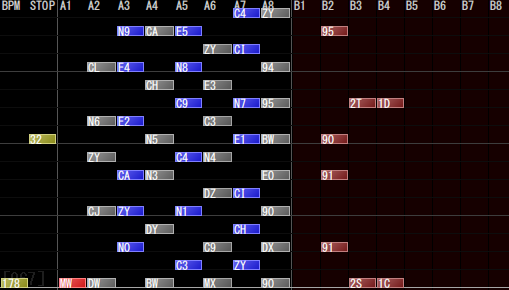
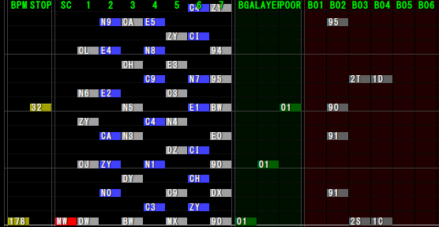
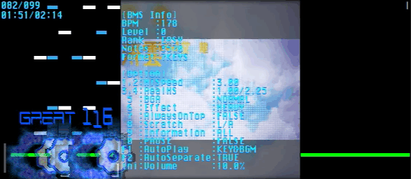

エディタ用スキン
自分が使用しているBMSエディタ用のスキンを置いておきます
iBMSC用スキン
こんなかんじ
インストール方法
- ダウンロードした simple_dark.Theme.xml を ./Data に配置
- iBMSCを起動しテーマから simple_dark.Theme.xml を選択
BMSE用スキン
こんなかんじ
インストール方法
- ダウンロードした dark.ini を ./theme に配置
- BMSEを起動し [設定 > Select Theme] から Dark を選択
おまけ : ubmplay用スキン
背景とノーツを差し替えただけです
インストール方法
- ダウンロードした image フォルダで ./image を置き換え